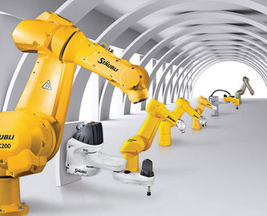
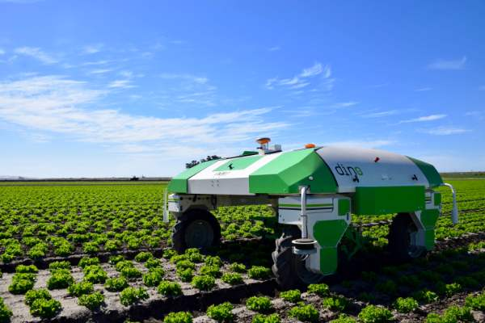
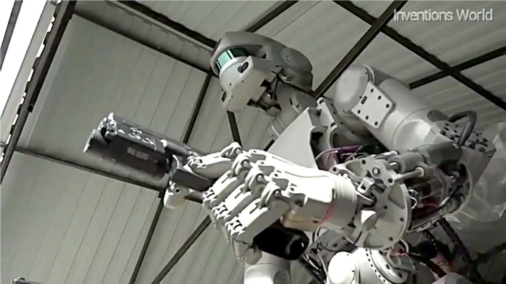

L'industrie :
Les robots d’usine ont pris en charge la plupart des tâches qui exigent un niveau de précision plus élevé, une vitesse supérieure et de la patience. Les usines automobiles utilisent des robots pour couper et assembler des pièces. Dans les chaines d’assemblage, on retrouve des robots soudeurs, manipulateurs, peintres …
L’agriculture :
La robotique permet désormais aux agriculteurs d’être plus efficaces et plus productifs dans la gestion des cultures car ils peuvent effectuer des tâches humaines à répétition de manière efficace et plus efficiente.
L’armée :
La technologie robotique est de plus en plus utilisée par les militaires pour les missions de recherche et de sauvetage. La miniaturisation permet aujourd’hui de créer des robots discrets mais dotés de plusieurs capteurs parfaits pour les espionnages et les missions d’infiltration.
La médecine :
Dans le domaine médical, un robot peut être utilisé pour effectuer des opérations trop délicates pour les mains d’un chirurgien ou comme aide lors d’opérations régulières telles que les pontages coronariens. On parle de surgétique (mot né de l’anglais « surgery » : chirurgie) c’est-à-dire tout ce qui consiste à introduire les derniers outils des technologies informatiques et robotiques dans la pratique médico-chirurgicale. Cette pratique de « chirurgie assistée » est émergente donc bien que peu répandue, elle est en phase de devenir la chirurgie du futur.